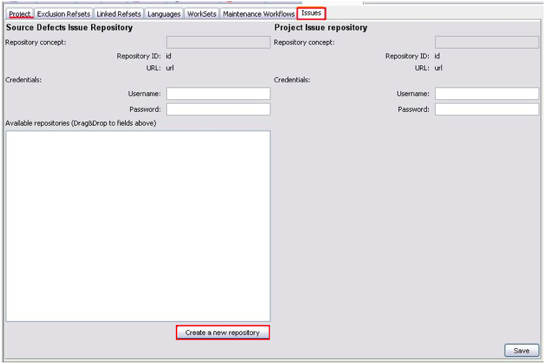
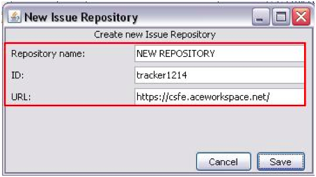
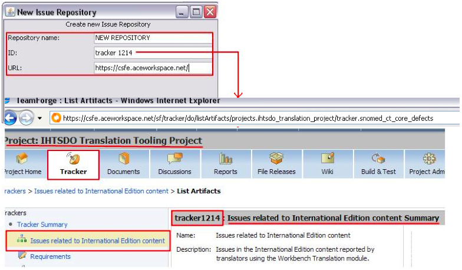
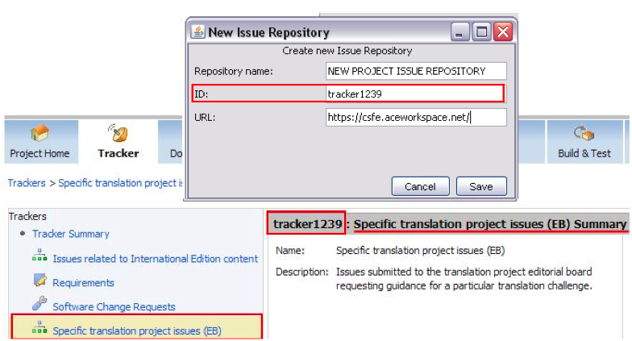
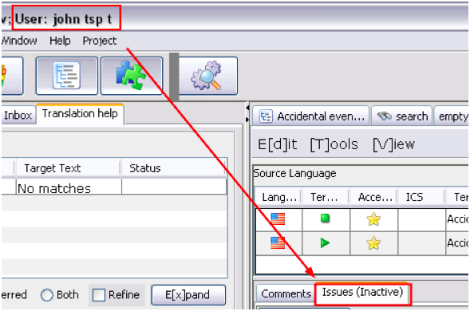
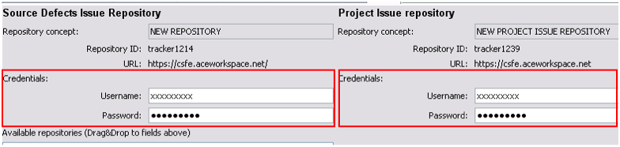
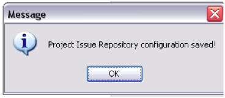

The project manager creates repositories for external issue reporting, external issue reporting is useful for facilitating the involvement of external actors into monitoring the project, anyone can see the progress of issues from a web site without accessing to the workbench application.
A repository is a reference to an external issues tracker tool. We are using Collabnet trackers to store external issues, so the details about URL and IDs of the repositories are URLs and Ids of existing Collabnet Issues Trackers are displayed on the Collabnet website. For this example we will provide you the details for two demo trackers created for this purpose, but your user must have access to the Translation Tooling Steering Group Collabnet project.
Each user has his/her own collabnet username and password for accomplishing this task.
Select Project and open “Issues” tab on the right pane, for a translation project, two repositories can be configured, one for reporting “source defects” (problems in the international, or source edition), and other for “project issues”, issues or situations related to the translation projects:


THE HIGHLIGHTED FIELDS ARE MANDATORY:

The same steps must be followed for creating a repository for issues related to a specific project. In this case, the URL is the same - https://csfe.aceworkspace.net - but repository ID is different, as issues will be exclusively specified for a given project:
Finally, user key data must be entered. Each user will have his/her credentials for editing issues in collabnet. Otherwise, the Issue tab will still be inactive:



Now, Issues tab in the translation interface is no longer inactive (For further information open help hook in "Issue" in the translation interface.